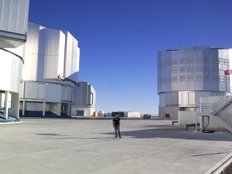

Jaime Gómez Chacoff
Physics Engineer
jaime.gomez@usach.cl
Schifflange, Luxembourg

Physics Engineer
I am versatile and data-driven engineer skilled in mathematical modeling and process analytics, with in-depth expertise in computer vision and data science. My background is in applied physics, optics and electronics. My research interests include Artificial Intelligence, Machine Learning, Space Robotics, Image processing, GANs & Big Data Analytics.
I finished my Bachelor in Physics in 2007 where i attended
courses of Quantum Mechanics, Optics, Spectroscopy, Mechanical Statistic, Solid-state physics among several mathematical courses.
I graduated in Physics Engineering in 2010, where I had a strong formation in Electronics & Digital Electronics, Sensors and Image Processing.
My thesis was in Machine Learning for Image Processing developing automatic algorithm with the use of SVMs in order to classify images.
I continue skilling up via e-learning in order to keep an up to date knownledge of the current technologies in Machine Learning, IoT, electronics and programming languages ...
I am an amateur musician, skilled at playing several plectrum instruments such as classic and electric guitar and some other folk instruments
like Mandolin, Bandurria and Lute.
From time to time i am able to composs a worthy beat to listen which would define my musician career as
mediocre with occasional flashes of brilliance hahaha.
For a period, during my studies, I joined a plectrum orchesta playing baroque music.
I am black belt first dan in Tang Soo do, I started practicing on regular basis since my 14 years old, until I got a job that took me around the world completing missions and visiting customers. Currently, I continue practicing martial arts at the Club Tai-Jitsu Ryu PGD Luxembourg.